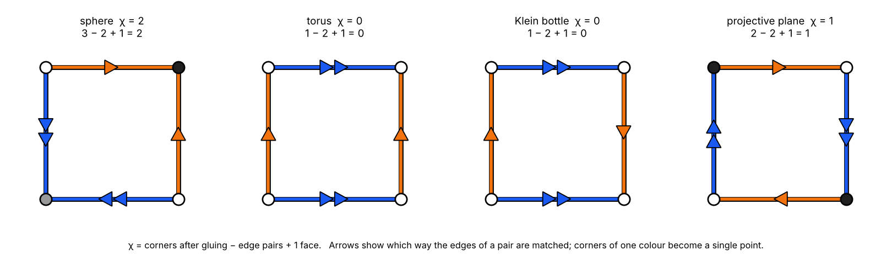

Gluing a square into closed surfaces
One square, four gluing rules, four closed surfaces. Each sequence carries the square’s grid, its edges and its corners all the way to the finished surface, so you can watch which edges meet and which corners become the same point.

| Surface | Gluing | Corners after gluing | χ | Sequence |
|---|---|---|---|---|
| Sphere | adjacent edges folded together (a a⁻¹ b b⁻¹) | 3 | 2 | sphere-sequence |
| Torus | opposite edges straight (a b a⁻¹ b⁻¹) | 1 | 0 | torus-sequence |
| Klein bottle | one pair straight, one flipped (a b a b⁻¹) | 1 | 0 | klein-bottle-sequence |
| Projective plane | both pairs flipped (a b a b) | 2 | 1 | projective-plane-sequence |
χ = corners after gluing − edge pairs + 1 face.
Conventions
- Edges: the two orange edges are glued to each other, and so are the two blue edges. In the diagrams, arrows show which way a pair is matched (single arrow = orange pair, double = blue).
- Corners: corners of one colour (white / black / grey) become a single point.
- Colours: surface colours agree across every gluing, so a finished surface has no colour seam.
- Transparency: later stages turn semi-transparent so self-intersections and hidden edges stay visible.
- In-between frames: every frame is a continuous map of the square, not a cross-fade between pictures.
Regenerating
python surface_sequences.py SURFACE keys [out_dir] # captioned strip + stage_01..10.png
python surface_sequences.py SURFACE anim [out_dir] # animated WebP
python surface_sequences.py overview [out_dir] # gluing-diagrams.png
python surface_sequences.py check # numerical check of every gluingSURFACE is one of sphere,
torus, klein-bottle,
klein-figure8, projective-plane.
check confirms, on the finished surfaces, that each edge
lands on its partner with the right orientation (mismatch at round-off
level) and that corners merge into the expected number of points.
This is a standalone educational script. It needs numpy,
scipy, matplotlib and pillow,
which are not project dependencies, and it does not touch the game
engine, the topology resolver, or any runtime contract. The 14-stage
projective-plane images in ../projective-plane-sequence/
were made with that folder’s own script; this script’s
projective-plane mode makes a 10-stage version in the same
style as the others.